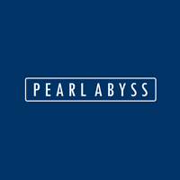

Pearl Abyss는 어떤 기업인가?

펄어비스(Pearl Abyss)는 한국의 게임 개발 및 서비스 회사입니다. 2010년에 설립되어 주로 온라인 게임 개발과 운영에 집중하고 있으며,
PC 및 모바일 플랫폼을 대상으로 다양한 장르의 게임을 개발하고 서비스하고 있습니다.
펄어비스가 가장 잘 알려진 게임은 MMORPG(대규모 다중 사용자 온라인 롤플레잉 게임)인 "검은사막"입니다.
"검은사막"은 고풍스러운 판타지 세계관을 배경으로 한 액션 요소와 실시간 전투, 풍부한 컨텐츠 등을 특징으로 하는 인기 게임으로 유명합니다.
최근에는 글로벌 시장 진출을 통해 국제적인 성공을 거두고 있습니다.
또한 펄어비스는 다양한 플랫폼과 장르의 게임을 개발하여 게임 팬들에게 즐거운 경험을 제공하고 있습니다.
이 기업에 들어가기 위해서 어떤 노력을 할 것인가?
게임 개발 프로그래머로서는, 검은사막은 자체 엔진으로 개발을 하고 있지만
주가 되는 언어는 C++로 알려져 있어 코딩테스트를 통해 C++ 코딩 능력을 지속적으로 개발할 것이며,
실시간 렌더링과 수학/물리에 이해를 요한다고 알려져 있기 때문에
각각 실시간 렌더링과 관련된 책과 수학/물리에 관한 책을 구매하여 지속적인 학습 및 계발을 꾀할 것입니다.
또한, 팀 프로젝트를 통한 공모전에 참가하여 그 과정을 통해 팀원 간의 커뮤니케이션 능력도 기를 것입니다.
QA로는, 우선 MMORPG라는 장르에 대한 경험이 많아야 검은사막이라는 게임을 더 이해하기 쉽기 때문에 다양한 MMORPG 장르의 게임을 섭렵하고,
QA와 개발 프로그래머의 상호적인 의사소통이 게임 개발에 지대한 영향을 끼치기 때문에
다양한 게임의 베타 테스트와 테스터끼리의 정보 공유를 통해 커뮤니케이션 능력을 기를 것입니다.